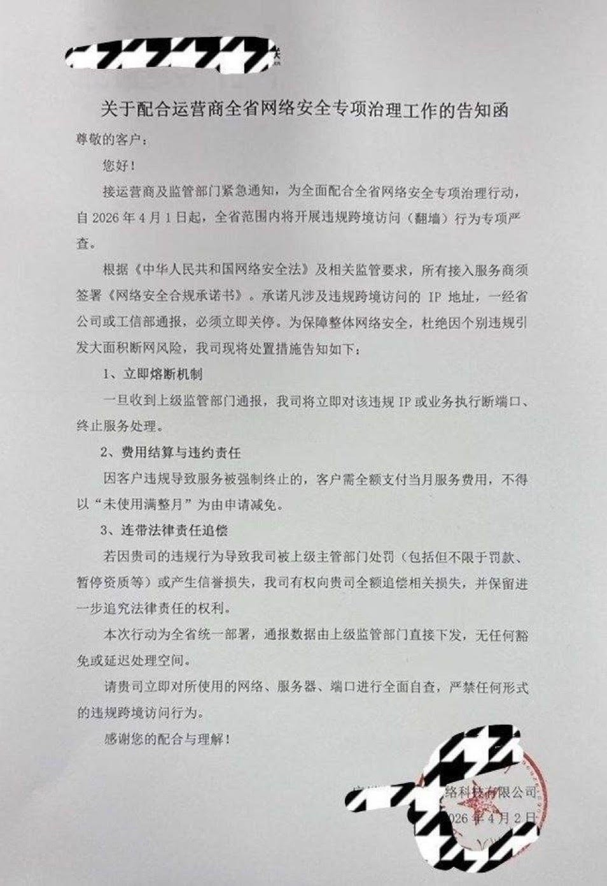
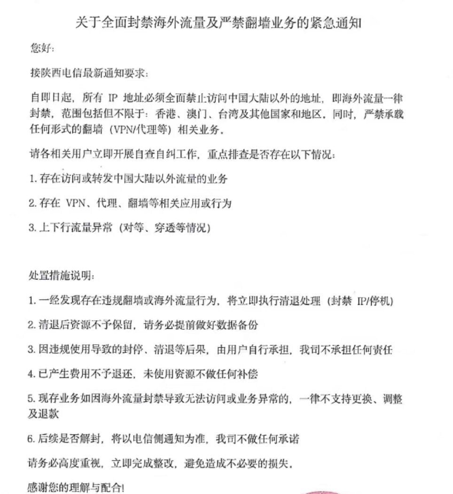
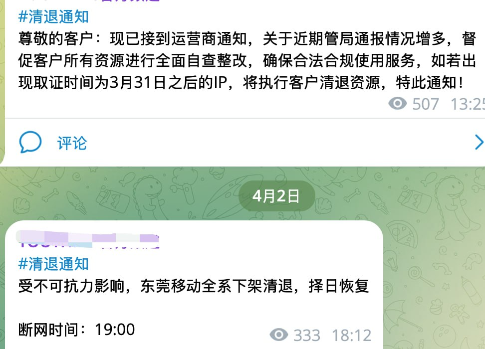
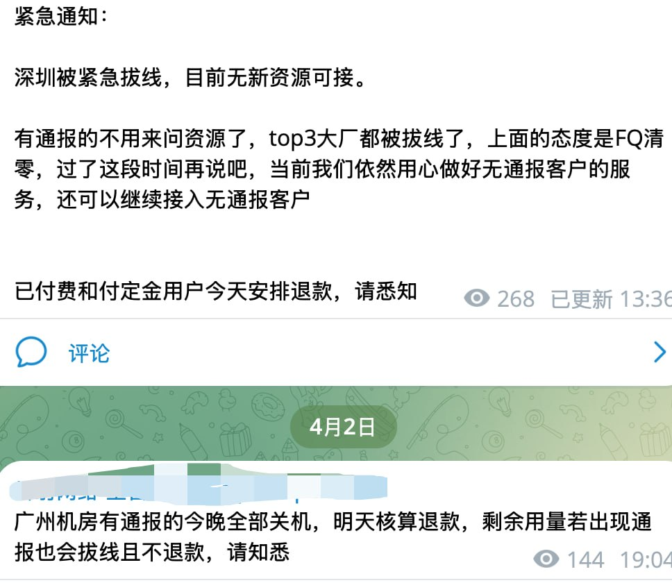

🕓2026年4月13日
视频教程：▶️https://youtu.be/Wl5cDjxDhqg?si=1jdYzSsQmThLliSZ
2026 节点为什么频繁掉线？
2026年4月份以来，大家有没有这种感觉：
👉 节点动不动就掉
👉 机场越来越不稳定
👉 有的甚至直接跑路
这不是你的错觉，是网络环境变了。先看看两张图片，你就知道为什么了？
4月8日，中共网信办在北京举行全国网络法治工作会议，推进重点网络立法，拓展涉外网络法治建设。一份由江苏网络服务商流出的《关于配合运营商全省网络安全专项治理工作的告知函》在网络传播。文件内容显示，相关部门正通过运营商体系，要求IDC（数据中心）服务商配合，全面直接强制禁止终端用户的境外访问。

4月8日，网上流出一份《陕西电信关于全面封禁海外流量及严禁翻墙业务的紧急通知》显示，自即日起全面禁止访问大陆以外地址（包括港澳台），并严禁任何翻墙业务。

另外，4月初，Telegram 电报群也陆陆续续有机场发布清退通知。


一、为什么现在越来越不稳定？
1️⃣ 风控升级了
现在不是简单封IP，而是：
👉 直接识别你的“流量特征”
很多低价机场，用的都是共享IP，
👉 一抓一个准
结果就是：
👉 新节点活不过几天
2️⃣ 机房开始清退
很多机场依赖中转线路，但现在：
👉 机房在主动清理
👉 入口节点被直接拔掉
👉 一断入口，全盘崩
3️⃣ 跑路变成常态
现在最真实的流程是：
👉 先不稳定
👉 再掉线
👉 最后直接消失
如果你经历过，你就懂。
二、现在还能用吗？
可以，但必须换思路。
👉 2026年已经不是“买一个机场”就能解决的时代了
三、最稳方案（直接照做）
别纠结，我直接给你答案👇
✔ 第一层：主力机场
用来日常使用
👉 选稳定线路，不要贪便宜
✔ 第二层：备用机场
主力挂了马上切
👉 建议按量付费
✔ 第三层：自建节点（核心）
这是关键：
👉 不怕跑路
👉 完全可控
👉 稳定性最高
推荐方案：
👉 VLESS + Reality
简单理解就是：
👉 把流量伪装成正常HTTPS
更自然，更难被识别。
四、说句实话（重点）
👉 现在还在“只用一个机场”的
基本迟早出问题
五、总结一句话
👉 稳定上网 ≠ 一个工具
👉 而是一套结构：
✔ 主力
✔ 备用
✔ 自建
如果你现在：
👉 还在频繁掉线
👉 不知道怎么选
那不是你不会用，
👉 是你还在用旧时代的方法。
后面我会继续更新👇
👉 Clash Verge 懒人配置
👉 自建节点教程
想稳定用，就往这套体系走。
六、相关链接 & 资源
👉 目前还算稳定的上网整理列表（我自己在用的）
精选机场推荐：https://www.kejixiaolu.com/jichang/jichangpm.html
👉 从零搭建节点的完整教程
✅ 3X-UI零基础搭建教程：https://youtu.be/mzLR9ebXeNY?si=ci0TfKKRf8gZhL7d
✅ VLESS+Reality 高级玩法：https://youtu.be/6AWVEsNvxrE?si=K0GG2r9C4gxsZNUE